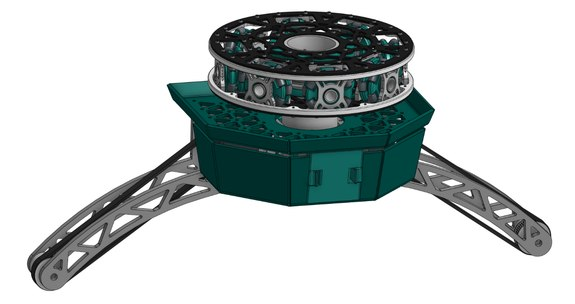
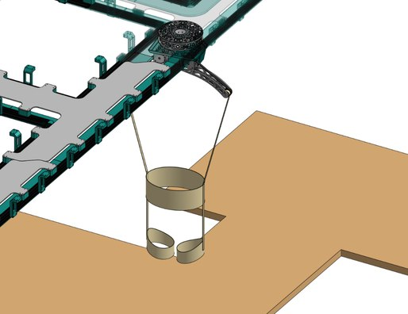
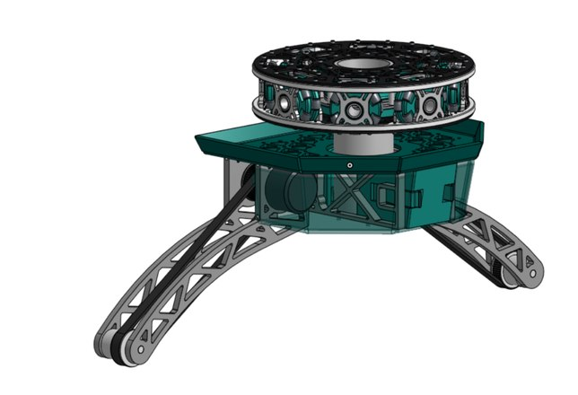
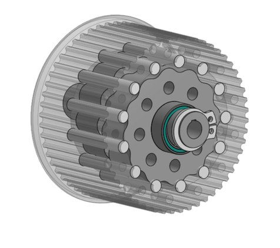
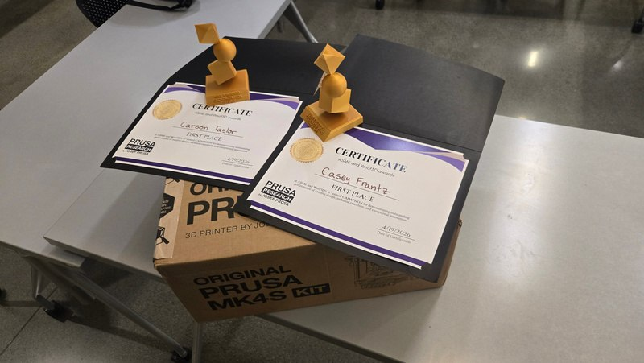

Fall-Prevention Harness Concept
A teammate and I designed this robotic harness concept for a six-hour CADathon on wearable technology. The idea was to support an older adult from configurable ceiling rails, allowing movement around a room while responding to sudden torque changes that could signal a fall.
The CAD design includes a carrier with a rotary mecanum wheel assembly, accessible clips, and integrated motor placement. A dual-offset cycloidal gearbox fits inside a belt pulley to keep the motor gearing compact.
We placed first in the competition. This was a CAD concept; the portfolio shows the proposed mechanism and room arrangement, rather than a tested fall-prevention device.




